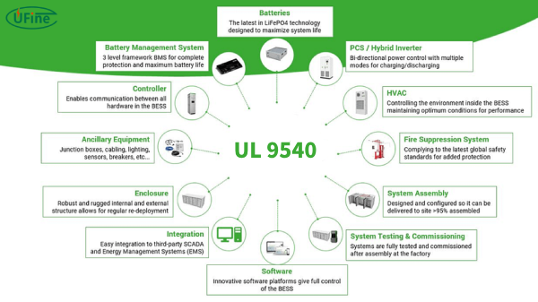
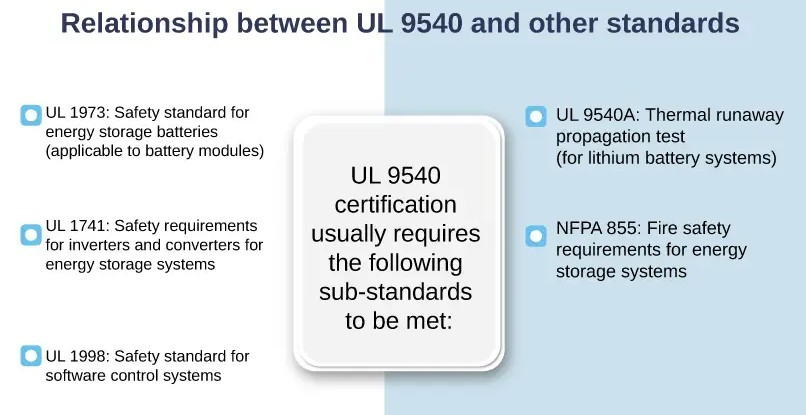
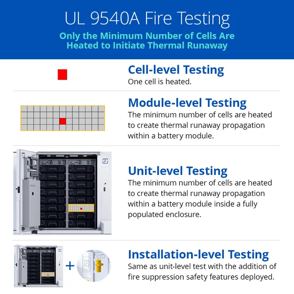
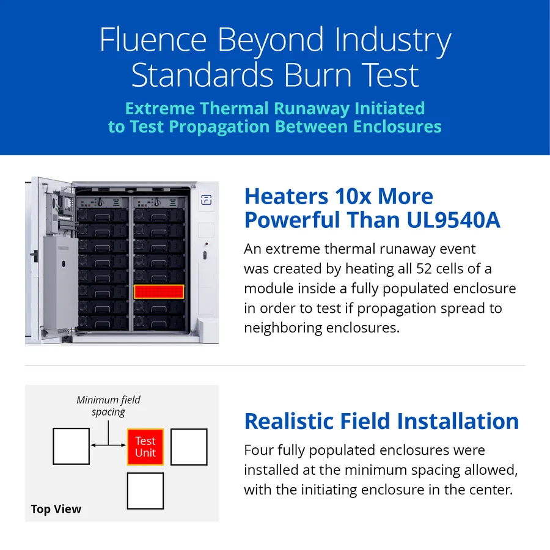
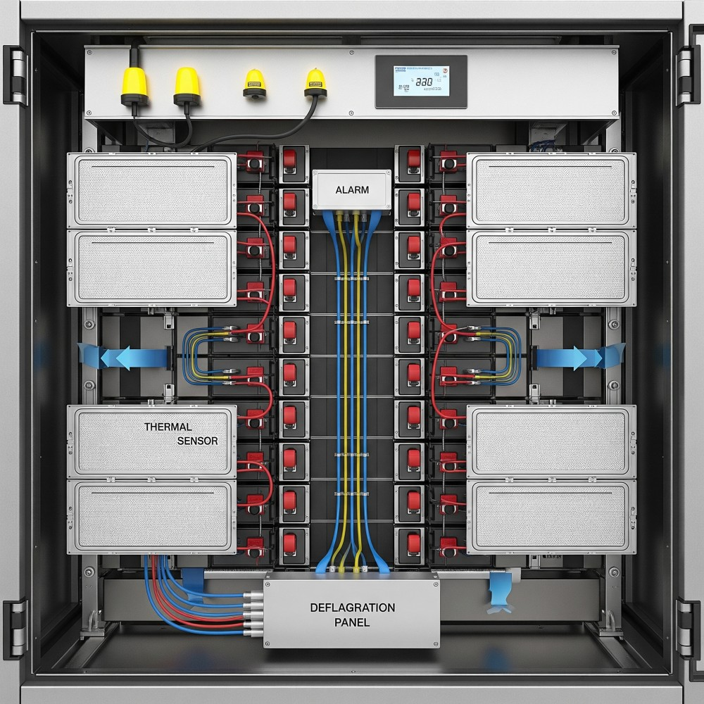

Energy storage systems are a rapidly expanding industry, and as technology evolves, so do the safety codes and standards that govern them. These regulations are crucial for protecting both people and property. In North America, key standards like UL 9540 and UL 9540A have been established to ensure the safety and testing of battery-based energy storage systems. Similarly, global standards like the IEC 62933 series address these same safety requirements.
Codes vs. Standards: Whats the Difference?
In any industry, codes and standards work together to create a safe environment. Codes are minimum criteria that are written into regional law, making them mandatory. They exist to ensure the safety of life and property. On the other hand, standards are best practices developed by reputable industry organizations, such as Underwriters Laboratories (UL) and the International Electrotechnical Commission (IEC). They become mandatory only when they are referenced within a code.
Understanding UL 9540 and UL 9540A
Two of the most important standards for energy storage systems are UL 9540 and UL 9540A.
UL 9540 is a system-level certification that evaluates and certifies the overall safety of energy storage products. A product that is UL 9540 certified has been independently verified by a nationally recognized testing laboratory to meet the standard's requirements.

UL 9540A is a companion standard that provides the test method for evaluating the propagation of a thermal runaway event. Thermal runaway occurs when a battery cell's temperature increases at a faster rate than it can dissipate heat, leading to an uncontrollable rise in temperature that can result in off-gassing, fire, or even an explosion. The purpose of UL 9540A testing is to understand what happens when a battery system enters thermal runaway and whether it will spread to neighboring cells, modules, or units. It's important to note that UL 9540A does not have a simple pass or fail criteria; the test results are evaluated to ensure the system performs as designed and expected.

Levels of UL 9540A Testing
UL 9540A testing can be conducted at four different levels:
- Cell: A single battery cell is heated to force a thermal runaway event.
- Module: Multiple cells are connected together and one is heated to see if the thermal runaway propagates to adjacent cells.
- Unit: A collection of modules inside a rack or enclosure is tested to see if the event spreads to neighboring units.
- Installation: A unit test setup is used, but with additional fire suppression systems to observe their effectiveness.

The Importance of Large-Scale Fire Testing
While UL 9540A testing is crucial for understanding how a battery system behaves during a thermal event, it has limitations. A large-scale fire test, as defined by NFPA 855, goes further by inducing a significant fire in a representative energy storage system to see if it spreads to adjacent units or through fire-resistant barriers. This type of testing helps to provide additional data on what might happen if a system were to fail at a project site and ensures that safety features work as intended.
Companies like Fluence are taking the lead in defining their own large-scale fire tests, creating extreme events that go beyond UL 9540A requirements. For example, in one such test, Fluence intentionally triggered a thermal runaway event in a large number of cells (over 26) within a unit, while observing if the event propagated to adjacent units. The test demonstrated that the fire was contained to the initiating unit and did not spread, with the off-gassing failing to cause an explosion.

The goal of these tests is not just to see if a system fails, but to characterize its behavior. As Paul Hayes of American Fire Technologies said, "all data is good data." The information gathered helps to develop robust emergency response procedures for first responders and highlights how a system will likely behave in a real-world scenario.
What We have Learned from Large-Scale Fire Testing
The data from these tests has revealed valuable insights. We've learned that the outcome of a fire can vary depending on the battery's chemistry and that some fires may unfold slowly and even burn out on their own. This knowledge is critical for creating effective safety plans. Since it may be difficult to know when a fire inside an enclosure is out, monitoring tools like Infrared (IR) cameras can provide crucial information on temperature changes, helping first responders make informed decisions.
Designing for Proactive Safety
Safety should be a top priority from the very beginning of a project. Energy storage systems can be designed with features to prevent or minimize the effects of a thermal event. These include sensors and alarms that can automatically shut down a system if an issue is detected and deflagration panels that direct the energy from an explosion away from personnel and neighboring units.

Beyond the technology itself, a comprehensive approach to safety is essential. This includes:
- Creating a Site-Specific Safety Plan: Work with local fire departments to develop a detailed emergency response plan for each project site.
- Providing Documentation: Prepare and share product safety documents, test reports, and explanations of built-in safety features with all stakeholders.
- Regular Training: Organize recurring safety training sessions for employees, contractors, and first responders to ensure everyone is prepared and informed.
Best Practices for Asset Management
Over the lifetime of a project, asset managers play a vital role in maintaining safety. This includes:
- Keeping Plans Current: Regularly review and update the emergency response plan, especially as personnel change.
- Routine Inspections: Conduct proactive Operations & Maintenance (O&M) inspections to identify potential issues early and establish a baseline for system operation.
Conclusion
The development and evolution of safety codes and standards like UL 9540, UL 9540A, and NFPA 855 are critical for the continued growth of the battery-based energy storage industry. These regulations, combined with rigorous testing methods such as large-scale fire tests, provide the necessary framework to ensure product safety and inform emergency response protocols.
By designing systems with built-in safety features, fostering collaboration with first responders and local authorities, and implementing proactive asset management practices, the industry can minimize risks and build trust. A commitment to continuous learning and the regular revision of these standards will be essential to keep pace with rapid technological advancements and ensure that battery energy storage remains a safe and reliable component of our energy future.